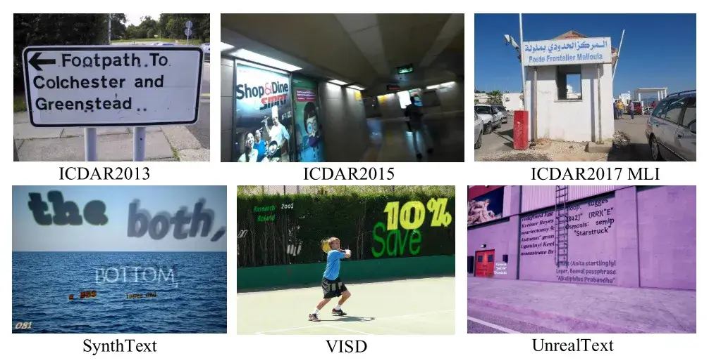
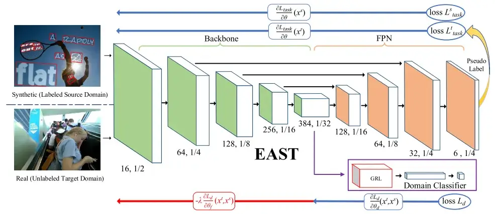
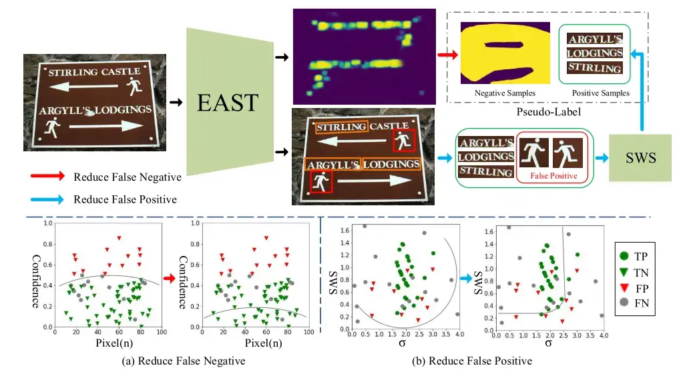
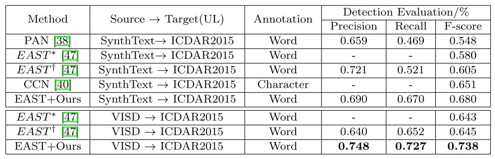
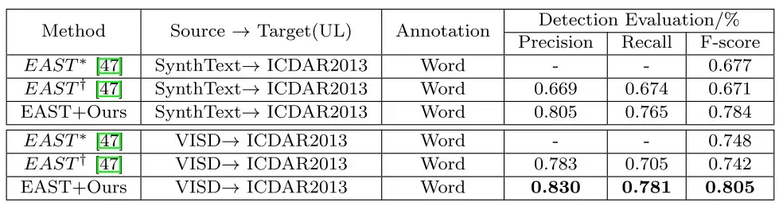
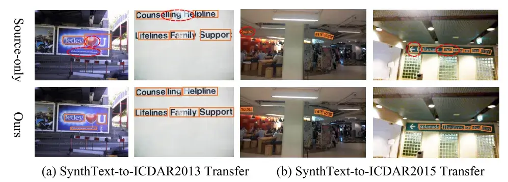
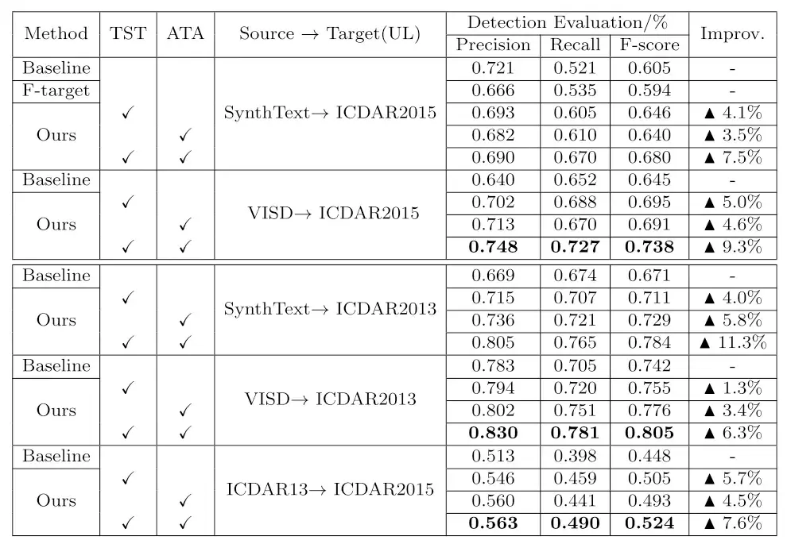
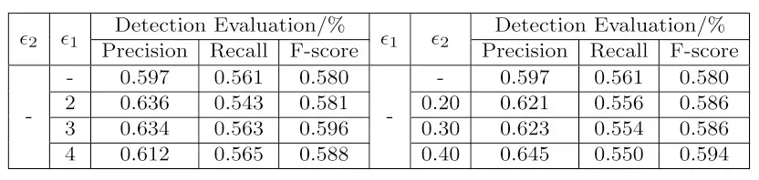

资源
全文
Abstract
基于深度学习的场景文本检测算法在充分利用已标注的训练数据的基础上，能够获得较好的检测性能。然而，手动贴标签费时费力。在极端情况下，相应的注释数据不可用。利用合成数据是一种非常有前途的解决方案，但合成数据与真实的数据之间的域分布不匹配 除外。针对场景文本检测中存在的严重域分布不匹配问题 ，提出了一种从合成域到真实的域的自适应场景文本检测方法。本文提出了一种基于**文本自训练（TST）和对抗性文本实例对齐（ATA）**的自适应场景文本检测方法。ATA 通过以对抗的方式训练域分类器来帮助网络学习域不变特征。TST 减少了来自不准确伪标签的假阳性（FP）和假阴性（FN）的不利影响。当从合成场景适应到真实的场景时，两个分量对提高场景文本检测器的性能有积极的作用。我们通过从 SynthText、VISD 转移到 ICDAR2015、ICDAR2013 对所提出的方法进行了评估。实验结果验证了所提方法的有效性，提高了 10% 以上，对领域自适应场景文本检测具有重要的探索意义。
1 Introduction
场景文本检测因其在计算机视觉中的众多应用而受到越来越多的关注。此外，在过去的几十年里，场景文本检测取得了巨大的成功。然而，这些检测方法需要手动标记大量的训练数据，这非常昂贵且耗时。虽然已经存在几个公共基准，但它们只涵盖了非常有限的场景。在现实世界中，特定的应用程序任务通常需要收集和注释新的训练数据集，而收集足够的标记数据是困难的，甚至是不可能的。因此，昂贵的标签成本已成为基于深度学习方法的文本检测应用的主要问题 。
随着计算机图形学的飞速发展，一种可供选择的方法是利用大量可从虚拟世界中获得的合成数据，并且可以自由地和自动地生成地面实况。
SynthText 首先提供了一个虚拟场景文本数据集，并自动生成带有单词级和字符级注释的合成图像。
VISD 为文本合成配备了选择性语义分割，以产生更真实的样本。
UnrealText 通过 3D 图形引擎提供逼真的虚拟场景文本图像，该 3D 图形引擎通过将场景和文本作为一个整体呈现来提供逼真的外观。
尽管合成数据提供了在训练场景文本检测器中替代真实的图像的可能性，其具有低标注成本和高标注精度，但是许多先前的工作也表明，由于被称为“域移位 Domain Shift ”的现象，仅使用合成数据的训练降低了对真实的数据的性能。如图 1 所示，与常见对象不同，文本在现实场景中具有更多的形状、颜色、字体、大小和方向的多样性，这导致合成数据与真实的数据之间存在较大的域差距。因此，当仅从合成数据向真实的数据应用模型学习时，模型的性能显著降低。

不同数据集的例子。第一行分别来自真实的 ICDAR 2013、ICDAR 2015 和 ICDAR 2017 MLI。
为了解决域偏移问题，提出了一种基于合成到真实的域的场景文本检测方法，该方法利用合成数据和未标记的真实的数据，有效地提高了模型在真实的数据上的性能。受 [1909.00597] Self-Training and Adversarial Background Regularization for Unsupervised Domain Adaptive One-Stage Object Detection (arxiv.org) 和 [1409.7495] Unsupervised Domain Adaptation by Backpropagation (arxiv.org) 的启发，本文提出了一种文本自训练（TST）方法 和**一种对抗性文本实例对齐（ATA）**来减少域移位。
自训练在领域自适应常见对象检测和语义分割方面取得了出色的结果 。然而，场景文本检测任务更多样化的情况下，复杂的背景还没有在这个方向上探索。为了更好地将自训练应用于场景文本检测，TST 用于抑制伪标签中出现的假阳性和假阴性的不利影响。此外，我们首先利用对抗学习帮助模型学习场景文本的区分特征。对**抗性学习已被证明在域自适应图像分类和常见对象检测等任务中是有效的。由于大多数场景文本检测器都是单阶段检测器，因为它们没有区域建议过程，因此我们提出 ATA 以对抗训练方式对齐文本实例的判别特征。**本文的主要贡献如下：
我们引入文本自训练（TST） ，通过最小化不准确伪标签的不利影响来提高域自适应场景文本检测的性能。
我们提出了**对抗性文本实例对齐（ATA）**来帮助模型学习域不变特征，从而增强模型的泛化能力。
我们首先介绍了一种用于场景文本检测的合成到真实的域自适应方法 ，该方法将知识从合成数据（源域）转移到真实的数据（目标域）。
通过针对场景文本检测传输任务（例如，SynthText → ICDAR 2015）。实验结果表明，该方法能够有效解决场景文本检测中的域偏移问题，对领域自适应场景文本检测具有重要的探索意义。
2.1 Scene Text Detection
简介场景文本检测。
2.2 Domain Adaptation
领域自适应减少了训练数据和测试数据之间的领域差距 。最近的方法使用更有效的方法来减少域间隙，例如将域分类器与梯度反转结合。
2.3 Self-Training
先前的工作使用自我训练来弥补分类信息的缺乏。然而，由于前期工作的不足，文本检测在自训练方法上还需要进一步的探索。
3 Proposed Method
在这一节中，分析了由畴移引起的问题。此外，我们介绍了 TST 和 ATA 的原理，以及如何使用它们进行域适配。为了评估我们的方法，采用 EAST 作为基线。
3.1 Problem and Analysis
虽然合成场景文本数据可以自动生成多样化的外观和准确的 GT，但仅用合成数据训练的模型不能直接应用于真实的场景，因为合成数据集和真实的数据集之间存在显著的域偏移。从概率的角度看问题会更清楚。我们将 合成数据域称为源域 ，将真实的数据域称为目标域 。场景文本检测问题可以看作是学习后验 P ( B ∣ I ) P(B|I) P ( B ∣ I ) 已知图像特征求预测边界框 ），其中 I I I 图像特征 ，B B B 文本实例的预测边界框 。使用贝叶斯公式，后验 P ( B ∣ I ) P(B|I) P ( B ∣ I )
P ( B ∣ I ) = P ( I ∣ B ) ∗ P ( B ) P ( I ) = P ( I ∣ B ) P ( I ) ∗ P ( B ) P(B|I)=\frac{P(I|B)*P(B)}{P(I)}=\frac{P(I|B)}{P(I)}*P(B)
P ( B ∣ I ) = P ( I ) P ( I ∣ B ) ∗ P ( B ) = P ( I ) P ( I ∣ B ) ∗ P ( B )
我们在此任务中进行协变量移位假设，即先验概率 P ( B ) P(B) P ( B ) 预测边界框的划定相同，正确划定出文本的范围 ）。P ( I ∣ B ) P(I|B) P ( I ∣ B ) I I I 学习到真特征 的可能性。我们还考虑了 P ( I ∣ B ) P(I|B) P ( I ∣ B ) P ( I ) P(I) P ( I ) 提取出的特征不同 ）。换句话说，为了检测文本实例，检测结果中的差异是由域改变特征引起的。为了提高模型的泛化能力，模型需要学习更多的域不变特征，无论输入图像属于哪个域都保持相同的 P ( I ) P(I) P ( I ) 迫使模型在读取合成数据和真实数据时，都提取出同样的特征 ）。在 EAST 模型中，图像特征 P ( I ) P(I) P ( I ) 从 backbone 输出的特征 。因此，特征图应该在源域和目标域之间对准 （即，P s ( I ) = P t ( I ) P_{s}(I)=P_{t}(I) P s ( I ) = P t ( I ) 我们建议 ATA 协调这些特性 ，下一小节将介绍更多详细信息。
3.2 Adversarial Text Instance Alignment
受 [1409.7495] Unsupervised Domain Adaptation by Backpropagation (arxiv.org) 的启发，采用 ATA 来帮助网络学习域不变特征。在 EAST 模型中，图像特征 P ( I ) P(I) P ( I ) P ( I ) P(I) P ( I ) 代码中 y_pred_prob_f）。我们假设模型的输入样本 为 x ∈ X x\in X x ∈ X X X X y i y_i y i i i i 代码中 y_true），对于源域 y i = 0 y_i=0 y i = 0 目标域 y i = 1 y_i = 1 y i = 1 p i ( x ) p_i(x) p i ( x )
L d = − ∑ i ( y i × l n p i ( x ) + ( 1 − y i ) × l n 1 − p i ( x ) ) L_d=-\sum_i(y_i\times ln^{p_i(x)}+(1-y_i)\times ln^{1-p_i(x)})
L d = − i ∑ ( y i × l n p i ( x ) + ( 1 − y i ) × l n 1 − p i ( x ) )
1 2 3 4 5 6 7 8 9 def bce_loss (y_true, y_pred_logits ):1 )min =1e-7 , max =1 - 1e-7 ) return -(y_true * y_pred_prob_f.log() + (1. - y_true) * (1 - y_pred_prob_f).log()).mean()
为了学习域不变特征，我们以对抗的方式优化参数。通过最小化上述域分类损失来优化域分类器的参数，并且通过最大化该损失来优化基础网络的参数。更详细地说，梯度反转层（GRL）被添加在 EAST 的主干和域分类器之间，当通过 GRL 层时，梯度的符号被反转（梯度反转层主要同在特征提取器与域分类器之间，那么在反向传播过程中，域分类器的域分类损失的梯度反向传播到特征提取器的参数之前会自动取反，进而实现了类似与 GAN 的对抗损失。 ）。如图 2 所示，特征金字塔网络（FPN）和骨干网在训练阶段都最小化了 EAST 的原始损失 L t a s k L_{task} L t a s k L t a s k L_{task} L t a s k 评分图损失 和几何形状 损失。L t a s k t L^t_{task} L t a s k t 目标域中使用伪标签进行训练 ，L t a s k s L^s_{task} L t a s k s 源域中进行训练 。因此，不同参数空间的训练目标不同：
{ L f = min ( L t a s k t ( θ f ∣ x t ) + L t a s k s ( θ f ∣ x s ) − λ L d ( θ ∣ ( x s , x t ) ) ) θ f ∈ F , L d = min ( L d ( θ d ∣ ( x s , x t ) ) ) θ d ∈ C , L h = min ( L t a s k t ( θ h ∣ x t ) + L t a s k s ( θ h ∣ x s ) ) θ h ∈ D , \begin{cases}L_f=\min(L_{task}^t(\theta_f|x^t)+L_{task}^s(\theta_f|x^s)-\lambda L_d(\theta|(x^s,x^t)))&\theta_f\in F ,\\L_d=\min(L_d(\theta_d|(x^s,x^t)))&\theta_d\in C ,\\L_h=\min(L_{task}^t(\theta_h|x^t)+L_{task}^s(\theta_h|x^s))&\theta_h\in D ,\end{cases}
⎩ ⎪ ⎨ ⎪ ⎧ L f = min ( L t a s k t ( θ f ∣ x t ) + L t a s k s ( θ f ∣ x s ) − λ L d ( θ ∣ ( x s , x t ) ) ) L d = min ( L d ( θ d ∣ ( x s , x t ) ) ) L h = min ( L t a s k t ( θ h ∣ x t ) + L t a s k s ( θ h ∣ x s ) ) θ f ∈ F , θ d ∈ C , θ h ∈ D ,
骨干网络的目标：最小化检测的损失、最大化域分类器的损失（既要骗过 Domain Classifier，又要提取出有价值的特征。 ）
域分类器的目标：最小化域分类器的损失
FPN 的目标：最小化检测的损失（依旧做标签预测。 ）
其中 F F F C C C D D D
L = L f + L h + λ L d L=L_f+L_h+\lambda L_d
L = L f + L h + λ L d
1 2 3 4 5 6 7 8 9 10 11 12 13 14 15 16 17 18 19 20 21 22 23 24 25 26 27 28 29 class Loss_target (nn.Module):def __init__ (self, weight_angle=10 ):super (Loss_target, self ).__init__()self .weight_angle = weight_angleself .bce = bce_lossdef forward (self, gt_score, pred_score, gt_geo, pred_geo, ignored_map,pre_domain ):if torch.sum (gt_score) < 1 :return torch.sum (pred_score + pred_geo) * 0 1 -ignored_map))1. ]]]).to(torch.device("cuda" ))self .bce(gt_doamin, pre_domain)sum (angle_loss_map * gt_score) / torch.sum (gt_score)sum (iou_loss_map * gt_score) / torch.sum (gt_score)self .weight_angle * angle_loss + iou_lossreturn geo_loss, classify_loss, doamin_loss
其中 λ \lambda λ

具有相应优化对象的网络架构。$\theta$ 表示 EAST 的参数。域分类器（绿色）经由梯度反转层添加在特征提取器之后，梯度反转层在基于反向传播的训练期间将梯度乘以某个负常数。$L_{task}$ 是 EAST 原有的检测损失，$L_d$ 是领域分类器的损失
Backbone FPN（Label Predictor） ATA（Domain Classifier） EAST 类
1 2 3 4 5 6 7 8 9 10 11 12 13 14 15 16 17 18 19 20 21 22 23 24 25 26 27 28 29 30 31 32 33 34 35 36 37 38 39 40 41 42 43 44 45 46 47 48 49 50 51 52 53 54 55 56 57 58 59 60 61 62 63 64 65 66 67 68 69 70 71 72 cfg = [64 , 64 , 'M' , 128 , 128 , 'M' , 256 , 256 , 256 , 'M' , 512 , 512 , 512 , 'M' , 512 , 512 , 512 , 'M' ] def make_layers (cfg, batch_norm=False ):3 for v in cfg:if v == 'M' : 2 , stride=2 )]else : 3 , padding=1 )if batch_norm:True )]else :True )]return nn.Sequential(*layers) class VGG (nn.Module):def __init__ (self, features ):super (VGG, self ).__init__()self .features = features self .avgpool = nn.AdaptiveAvgPool2d((7 , 7 )) self .classifier = nn.Sequential(512 * 7 * 7 , 4096 ),True ),4096 , 4096 ),True ),4096 , 1000 ),for m in self .modules(): if isinstance (m, nn.Conv2d):'fan_out' , nonlinearity='relu' )if m.bias is not None :0 )elif isinstance (m, nn.BatchNorm2d):1 )0 )elif isinstance (m, nn.Linear):0 , 0.01 )0 )def forward (self, x ):self .features(x) self .avgpool(x) 0 ), -1 ) self .classifier(x) return xclass extractor (nn.Module): def __init__ (self, pretrained ):super (extractor, self ).__init__()True )) if pretrained:if pretrained: '/data/data_weijiawu/Sence_Text_detection/Paper-ACCV/baseline/EAST_1/vgg16_bn-6c64b313.pth' ))self .features = vgg16_bn.features def forward (self, x ):for m in self .features: if isinstance (m, nn.MaxPool2d): return out[1 :]
1 2 3 4 5 6 7 8 9 10 11 12 13 14 15 16 17 18 19 20 21 22 23 24 25 26 27 28 29 30 31 32 33 34 35 36 37 38 39 40 41 42 43 44 45 46 47 48 49 50 51 52 53 54 55 56 57 58 59 60 61 62 63 64 65 66 67 68 69 70 71 72 73 74 75 76 77 78 79 80 81 82 83 84 85 86 87 88 89 90 91 92 93 94 95 96 97 98 99 class merge (nn.Module): def __init__ (self ):super (merge, self ).__init__()self .conv1 = nn.Conv2d(1024 , 128 , 1 )self .bn1 = nn.BatchNorm2d(128 )self .relu1 = nn.ReLU()self .conv2 = nn.Conv2d(128 , 128 , 3 , padding=1 )self .bn2 = nn.BatchNorm2d(128 )self .relu2 = nn.ReLU()self .conv3 = nn.Conv2d(384 , 64 , 1 )self .bn3 = nn.BatchNorm2d(64 )self .relu3 = nn.ReLU()self .conv4 = nn.Conv2d(64 , 64 , 3 , padding=1 )self .bn4 = nn.BatchNorm2d(64 )self .relu4 = nn.ReLU()self .conv5 = nn.Conv2d(192 , 32 , 1 )self .bn5 = nn.BatchNorm2d(32 )self .relu5 = nn.ReLU()self .conv6 = nn.Conv2d(32 , 32 , 3 , padding=1 )self .bn6 = nn.BatchNorm2d(32 )self .relu6 = nn.ReLU()self .conv7 = nn.Conv2d(32 , 32 , 3 , padding=1 )self .bn7 = nn.BatchNorm2d(32 )self .relu7 = nn.ReLU()for m in self .modules():if isinstance (m, nn.Conv2d):'fan_out' , nonlinearity='relu' )if m.bias is not None :0 )elif isinstance (m, nn.BatchNorm2d):1 )0 )def forward (self, x ):3 ], scale_factor=2 , mode='bilinear' , align_corners=True )2 ]), 1 )self .relu1(self .bn1(self .conv1(y)))self .relu2(self .bn2(self .conv2(y)))2 , mode='bilinear' , align_corners=True )1 ]), 1 )self .relu3(self .bn3(self .conv3(y)))self .relu4(self .bn4(self .conv4(y)))2 , mode='bilinear' , align_corners=True )0 ]), 1 )self .relu5(self .bn5(self .conv5(y)))self .relu6(self .bn6(self .conv6(y)))self .relu7(self .bn7(self .conv7(y)))return yclass output (nn.Module): def __init__ (self, scope=512 ):super (output, self ).__init__()self .conv1 = nn.Conv2d(32 , 1 , 1 ) self .sigmoid1 = nn.Sigmoid() self .conv2 = nn.Conv2d(32 , 4 , 1 )self .sigmoid2 = nn.Sigmoid()self .conv3 = nn.Conv2d(32 , 1 , 1 )self .sigmoid3 = nn.Sigmoid()self .scope = 512 for m in self .modules():if isinstance (m, nn.Conv2d):'fan_out' , nonlinearity='relu' ) if m.bias is not None :0 )def forward (self, x ):self .sigmoid1(self .conv1(x)) self .sigmoid2(self .conv2(x)) * self .scope self .sigmoid3(self .conv3(x)) - 0.5 ) * math.pi 1 ) return score, geo
1 2 3 4 5 6 7 8 9 10 11 12 13 14 15 16 17 18 19 20 21 22 23 24 25 26 27 28 29 30 31 32 33 34 35 36 37 38 39 40 41 42 43 44 45 46 47 48 49 50 51 52 53 54 55 56 57 58 59 60 61 62 63 64 65 66 67 68 69 70 71 72 73 74 75 76 77 78 79 80 81 82 83 84 85 86 87 88 89 90 91 92 93 94 95 96 97 class DAImgHead (nn.Module):""" Adds a simple Image-level Domain Classifier head 添加一个图像级领域分类器头，用于图像层面的分类。 """ def __init__ (self ):""" Arguments: in_channels (int): number of channels of the input feature 输入特征的通道数 USE_FPN (boolean): whether FPN feature extractor is used 是否使用 FPN 特征提取器 """ super (DAImgHead, self ).__init__()self .conv1_da = nn.Conv2d(512 , 256 , kernel_size=1 , stride=1 ) self .conv2_da = nn.Conv2d(256 , 1 , kernel_size=1 , stride=1 ) for l in [self .conv1_da, self .conv2_da]: 0.001 )0 )def forward (self, x ): self .conv1_da(x))return self .conv2_da(t)class DAInsHead (nn.Module):""" 添加一个实例级领域分类器头，用于实例级别的分类。 Adds a simple Instance-level Domain Classifier head """ def __init__ (self ):""" Arguments: in_channels (int): number of channels of the input feature """ super (DAInsHead, self ).__init__()self .fc1_da = nn.Linear(2028 , 1024 ) self .fc2_da = nn.Linear(1024 , 1024 ) self .fc3_da = nn.Linear(1024 , 1 ) for l in [self .fc1_da, self .fc2_da]: 0.01 )0 )self .fc3_da.weight, std=0.05 )self .fc3_da.bias, 0 )def forward (self, x ): self .fc1_da(x))0.5 , training=self .training)self .fc2_da(x))0.5 , training=self .training)self .fc3_da(x)return xclass DomainAdaptationModule (torch.nn.Module):""" 这个模块的主要作用是通过领域自适应来处理图像特征，使得模型能够更好地适应不同的领域。 Module for Domain Adaptation Component. Takes feature maps from the backbone and instance feature vectors, domain labels and proposals. Works for both FPN and non-FPN. 域适配组件模块。从主干和实例特征向量、域标签和建议中提取特征图。适用于 FPN 和非 FPN。 """ def __init__ (self ):super (DomainAdaptationModule, self ).__init__()self .avgpool = nn.AvgPool2d(kernel_size=7 , stride=7 ) self .gap = nn.AdaptiveAvgPool2d(1 ) self .sigmoid_gap = nn.Sigmoid() self .grl_img = GradientScalarLayer(-1.0 * 0.1 ) self .grl_ins = GradientScalarLayer(-1.0 * 0.1 )self .grl_img_consist = GradientScalarLayer(1.0 * 0.1 ) self .grl_ins_consist = GradientScalarLayer(1.0 * 0.1 )self .imghead = DAImgHead() self .inshead = DAInsHead() def forward (self, img_features ):""" Arguments: img_features (list[Tensor]): features computed from the images that are used for computing the predictions. 从用于计算预测的图像中计算出的特征。 da_ins_feature (Tensor): instance-level feature vectors 实例级特征向量。 da_ins_labels (Tensor): domain labels for instance-level feature vectors 实例级特征向量目标的域标签 targets (list[BoxList): ground-truth boxes present in the image (optional) 实例级特征向量目标的域标签（list[BoxList）：图像中存在的地面真值框（可选） Returns: losses (dict[Tensor]): the losses for the model during training. During testing, it is an empty dict. 模型在训练过程中的损失。在测试过程中，它是一个空字典。 """ self .grl_img(self .gap(img_features)) self .sigmoid_gap(self .imghead(img_grl_fea)) return da_img_features
1 2 3 4 5 6 7 8 9 10 11 12 13 14 15 16 17 class EAST (nn.Module): def __init__ (self, pretrained=True ):super (EAST, self ).__init__()self .extractor = extractor(pretrained) self .merge = merge() self .output = output() self .DomainAdaptation = DomainAdaptationModule() def forward (self, x ): self .extractor(x) self .DomainAdaptation(C[3 ]) return self .output(self .merge(C)), class_domain
3.3 Text Self-Training
以前的工作已经证明了自我训练对领域适应 的有效性。然而，自我训练的两个主要问题仍然需要进一步探讨：假阳性（FP）（实际没有，预测有 ）和假阴性（FN）（实际有，预测没有 ）发生在伪标签。不正确的伪标签会对我们的网络造成非常严重的负面影响。为了克服这些问题，TST 被设计成最小化 FP 和 FN 的不利影响。
3.3.1 Reducing False Negatives.

Up：提出了文本自我训练的框架。我们利用 SWS 对伪标签中的阳性样本进行过滤，以最大限度地减少假阳性，并选择三分之一置信度较低的阴性样本作为最终阴性样本，以最大程度地减少假阴性。
受 [1909.00597] Self-Training and Adversarial Background Regularization for Unsupervised Domain Adaptive One-Stage Object Detection (arxiv.org) 的启发，利用弱监督方式来最小化假阴性的影响。如 EAST 中所定义的，原始分数图损失是
L_s=-\sum_{i\in Pos}\beta Y^*log\widehat{Y}-\sum_{i\in Neg}(1-\beta)(1-Y^*)(1-\widehat{Y})
其中 \widehat Y=F_s 是分数图的预测，Y ∗ Y^* Y ∗
虽然网络是通过反向传播学习背景损失（即负面例子）来优化的，但在伪标签中出现的 F P \mathrm{FP} F P F P \mathrm{FP} F P F P \mathrm{FP} F P
EAST 的负面例子是像素图，一个像素更有可能被视为负面像素，而相应的置信度得分更高。
因此，我们选择置信度得分最低的负样本像素（例如，N e g / 3 Neg/3 N e g / 3 η \eta η 1 / 3 1/3 1 / 3
\begin{aligned}L_{sw}&=-\sum_{i\in Pos}\beta Y_i^*log\widehat{Y}-\sum_{i\in\widehat{Ne}g}(1-\beta)(1-Y_i^*)(1-\widehat{Y})\end{aligned}
3.3.2 Reducing False Positives.
与假阴性相对应的是，假阳性也会对网络造成严重干扰。自然场景中的一些图案和设计极易被识别为文本，从而导致伪标签不准确 。取支持区域可靠分数（SRRS），我们提出了一种更合理的笔划宽度分数（SWS），该分数利用笔划宽度变换（SWT）来评估文本实例的预测框。
S R R S ( r ∗ ) = 1 N s ∑ i = 1 N s I o U ( r i , r ∗ ) ⋅ P ( c ∗ ∣ r i ) SRRS(r^*)=\frac1{N_s}\sum_{i=1}^{N_s}IoU(r_i,r^*)\cdot P(c^*|r_i)
S R R S ( r ∗ ) = N s 1 i = 1 ∑ N s I o U ( r i , r ∗ ) ⋅ P ( c ∗ ∣ r i )
EAST 是一种基于分割的方法，不需要 FPN，对于面积较小的文本实例，r i r_i r i N s N_s N s n ∗ m n * m n ∗ m W n v W^v_n W n v u t h u_{th} u t h w u v ∈ W n v w^v_u\in W^v_n w u v ∈ W n v
σ v = 1 N ∑ u = 1 N ( w u v − μ v ) 2 \sigma_v=\sqrt{\frac{1}{N}\sum_{u=1}^N(w_u^v-\mu^v)^2}
σ v = ⎷ N 1 u = 1 ∑ N ( w u v − μ v ) 2
其中 μ v \mu^v μ v v t h v_{th} v t h σ \sigma σ ϵ 1 \epsilon _1 ϵ 1
S W S v = w v σ v 2 SWS_v=\frac{w_v}{\sigma_v^2}
S W S v = σ v 2 w v
w v w_v w v v v v ϵ 2 \epsilon_2 ϵ 2 σ \sigma σ
4 Experiments
通过将场景文本检测器从合成数据集转移到真实的数据集来评估所提出的方法。我们采用几个纯合成数据和真实的场景数据（即，SynthText 和 ICDAR2015），它们具有共同的注释风格 （即，字级）。
4.1 Dataset and Experimental Settings
4.1.1 Pure Synthetic Datasets.
4.1.2 Real Datasets.
ICDAR 2015 是一个面向英文文本的多方向文本检测数据集，仅包含 1,000 张训练图像和 500 张测试图像。此数据集中的场景文本图像由 Google 眼镜拍摄，没有考虑定位，图像质量和视点。该数据集具有小的，模糊的和多方向的文本实例。
ICDAR 2013 在 ICDAR 2013 Robust 阅读竞赛期间发布，用于聚焦场景文本检测，包括高分辨率图像，229 用于训练，233 用于测试，包含英文文本。
4.1.3 Implementation Details.
在所有实验中，我们使用 EAST 作为基础网络。在原始论文之后，输入被调整为 512×512，并且我们应用了原始论文中使用的所有增强。该网络使用由 12 幅图像组成的批量输入进行训练，其中 6 幅图像来自源域，另外 6 幅图像来自目标域。Adam 优化器被采用作为我们的学习率方案。所有实验都使用相同的训练策略：
使用 ATA 对网络进行 80k 次迭代的预训练，以学习域不变特征，
使用预训练的模型来生成相应的伪标签（即，伪边界框标签和负样本图），然后用生成的伪标签微调预训练模型。在生成伪标签的过程中，我们将笔划宽度消除参数设置为 3.0 和 0.30。
所有实验都在常规工作站（CPU：Intel（R）Core（TM）i7- 7800 X CPU@3.50 GHz; GPU：GTX 2080 Ti）上进行。

不同模型在 Syn2Real 场景文本检测数据集上的性能，用于 SynthText/VISD → ICDAR 2015 传输。UL 指未标记的数据。* 表示 UnrealText 中报告的性能。† 指的是我们的测试性能。

不同模型在 Syn2Real 场景文本检测数据集上的性能，用于 SynthText/VISD → ICDAR 2013 传输。UL 指未标记的数据。*表示 UnrealText 中报告的性能。† 指的是我们的测试性能。
4.2.1 Synthetic→ ICDAR2015 Transfer.
表 1 总结了合成→ ICDAR 2015 转移任务的性能比较。EAST 模型作为仅使用源代码的基线训练具有不令人满意的 F 分数（使用 SynthText 为 60.5%，使用 VISD 为 64.5%），这可以被视为没有自适应的下限。通过结合所提出的方法，F-评分分别达到 68.0% 和 73.8%，比基线分别提高了 7.5% 和 9.3%。基于字符注释的 GCN 比基于单词注释的性能有所提高。然而，GCN 的性能仍然低于我们的方法，它利用了自我训练和对抗学习。实验结果表明，该方法能够有效地消除源数据和目标数据的领域差异。
4.2.2 Synthetic→ ICDAR2013 Transfer.
为了进一步验证该方法的有效性，以 ICDAR 2013 为目标域，进行了合成到真实的场景文本检测迁移的实验。实验结果报告在表 2 中。具体来说，对于 SynthText→ ICDAR 2013 转移任务，与仅使用源代码的基线 EAST 训练相比，我们实现了 11.3% 的性能提升。与合成→ICDAR2015 转移实验类似，VISD 也被用作比较实验中的源域。在使用 ATA 和 TST 后，该方法比基线 EAST 的性能提高了 6.3%，这表明该方法在减少域偏移方面的有效性。请注意，为了公平比较，除了添加 ATA 和 TST 之外，所提出的方法的基础网络和实验设置与基线 EAST 相同。
4.2.3 ICDAR2013→ ICDAR2015 Transfer.
表 3 显示了 ICDAR 2013 → ICDAR 2015 转移任务的性能。ICDAR 2013 的注释是矩形框，而 ICDAR 2015 的注释是旋转框，这限制了传输性能。然而，与仅使用源代码的基线 EAST 训练相比，我们实现了 7.6% 的性能提升。

不同型号的检测结果示例。第一行是仅使用源域的基线训练的结果。第二行是使用所提出方法的结果。
4.3 Ablation Study
4.3.1 Component Analysis.
为了验证所提出方法的有效性，我们在四个数据集上进行了 Syn2Real 转移任务的消融实验：SynthText、VISD、ICDAR2015 和 ICDAR2013。表 3 显示了实验结果。对于 SynthText→ICDAR2015 转移任务，使用 TST 和 ATA 后，F-得分分别提高了 4.1% 和 3.5%。此外，我们的方法比基线产生了高达 8% 的召回率，这表明了这种方法在提高模型鲁棒性方面的有效性。通过结合这两个组成部分，所提出方法的 F-得分达到了 68.0%，比基线绝对提高了 7.5%。VISD→ICDAR2015 转移任务表现更好，因为 VISD 具有更真实的合成效果。特别是，使用我们的方法的 F-得分达到了 73.8%，比相应的基线绝对提高了 9.3%。对于 SynthText/VISD→ICDAR2015 的传输，性能的提高也很显著。我们使用 SynthText 实现了 11.3% 的性能改进，使用 VISD 实现了 6.3% 的性能改善。

消融研究所提出的 Syn2Real 场景文本检测转移。“基线”表示仅使用源域中的标记数据进行训练。表示与仅使用源代码的基线训练相比，F-分数的增加。UL 指未标记的数据。'F-target'表示在源域中进行预训练，并在目标域中使用原始伪边界框进行微调。
4.3.2 Parameter Sensitivity on TST.
为了探索阈值参数（即，在 SWS 上，我们进行了几组比较实验，结果如表 4 所示。由于我们认为在理想情况下文本区域中的笔画宽度的标准差接近于零，因此使用阈值参数 ϵ 1 \epsilon_1 ϵ 1 ϵ 1 \epsilon_1 ϵ 1 ϵ 2 \epsilon_2 ϵ 2 ϵ 2 \epsilon_2 ϵ 2

4.3.3 Qualitative Analysis.
图 4 示出了用于合成到真实的转换任务的文本检测结果的四个示例。实验结果表明，该方法提高了模型在不同复杂背景和不同文本下的鲁棒性。TST 最小化了 FP 和 FN 的一部分，如第一列示例所示，ATA 帮助模型学习更多有区别的特征。
5 Conclusions
本文首先介绍了一种用于场景文本检测的合成域到真实的域自适应方法，该方法将知识从合成数据（源域）转移到真实的数据（目标域） 。提出的文本自训练（TST）有效地减少了伪标签的假阴性和假阳性的不利影响 ，而对抗性文本实例对齐（ATA）有助于网络以对抗的方式学习更多的域不变特征 。我们评估了所提出的方法与 EAST 在几个常见的合成和真实的数据集。实验结果表明，该方法对于合成到真实的迁移文本检测任务有很大的改进。